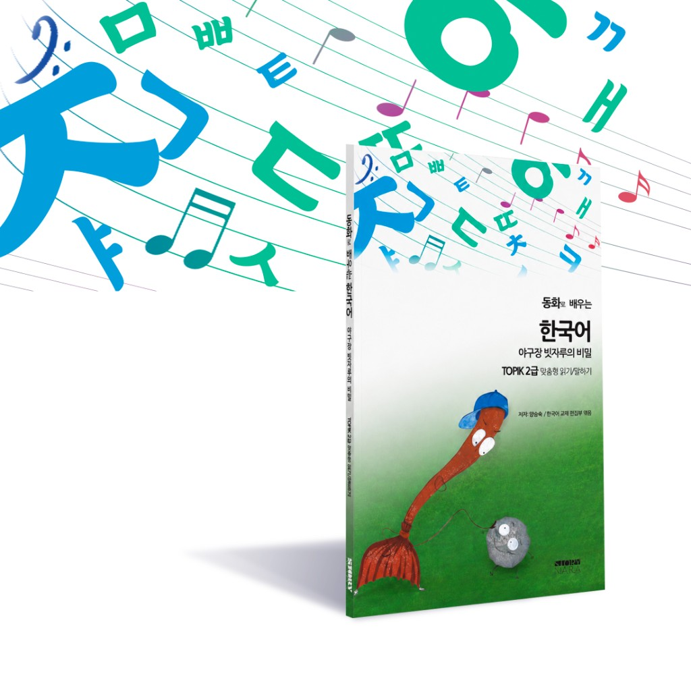
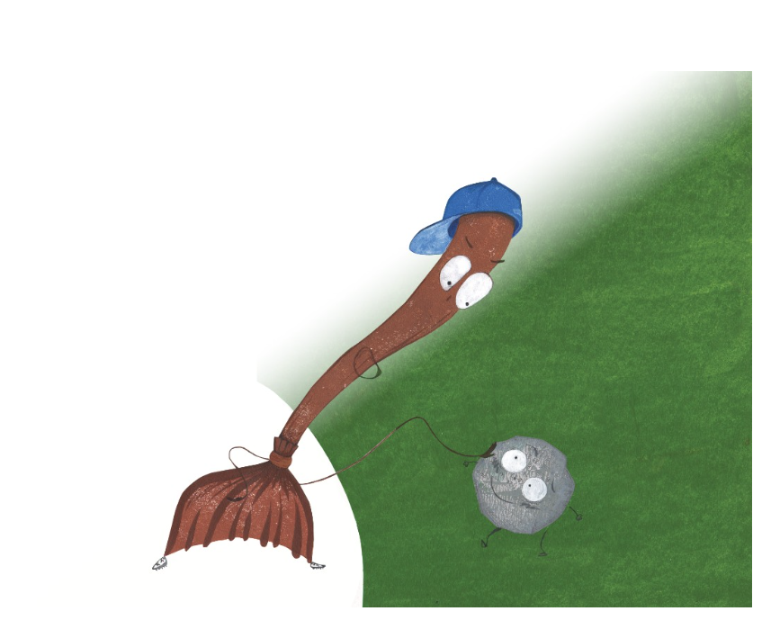

듀얼 트랙
너무 어렵지도 않게.
너무 유치하지도 않게.
당신에게 딱 맞게.
읽기 쉬우면서도 제대로 즐길 깊이가 있는 한국어 이야기입니다. 학습자에게 쉽게, 어른에게는 활용가치가 있게.

어려운 소설은 엄두가 안 나고, 동화책은 유치한가요?
소설은 사전을 찾느라 지칩니다. 동화책은 흥미를 오래 붙잡기엔 너무 단순합니다. 이 책은 그중간입니다—자연스럽고 재미 있으며 성인 독자에게 딱 맞습니다.
벽을 허물었습니다.
아름다운 이야기를 읽고 싶지만 너무 어렵고, 어린이 책은 읽기 싫었죠. 그 간극을 여러분 수준에 맞춘 이야기로 메웠습니다.
현직 교사가 다시 썼습니다.
단순히 쉽게 줄인 것이 아니라 정성껏 각색했습니다. 일상에서 자주 쓰는 단어만 사용해 사전 없이도 매끄럽게 읽을 수 있습니다.
한국어 본연의 「맛」.
실제 쓰지 않는 말은 걷어냈지만 마음과 감정은 고스란히 남겨두었습니다. 소리내어 읽으며 살아있는 한국어의 리듬을 느껴보세요.
공부하는 것 같지 않을 거예요.
이야기 끝까지 따라가 보세요. 책을 덮을 때 「한국어로 책 한 권을 다 읽었다!」는 생각이 들 겁니다. 그 성취감이 진짜 실력으로 이어집니다.

이것이 당신의 진짜 한국어 실력이 될 거예요.
"큰소리로 읽기"를 통해 RM의 가사와 드라마 대사가 훨씬 가까이 느껴질 겁니다. 유행어 몇개 보다 한 편의 이야기를 처음부터 끝까지 읽는 힘이 더 크거든요. 진짜 실력은 거기서 시작됩니다.
자신 있게 읽기.
시작하기 쉽고, 끝내기도 쉽습니다.
자연스럽게 이해하기.
사전은 필요 없습니다. 흐름을 즐기세요.
진짜 실력 쌓기.
어휘와 문법은 자연스럽게 당신 것이 됩니다.
현실 세계와 연결하기.
노래, 드라마, 대화가 그 어느 때보다 가까워집니다.